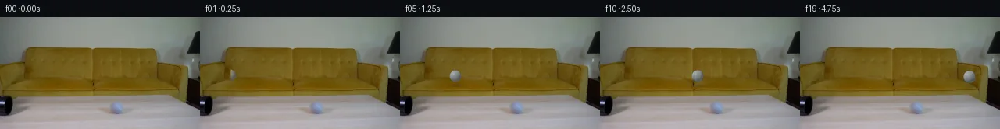
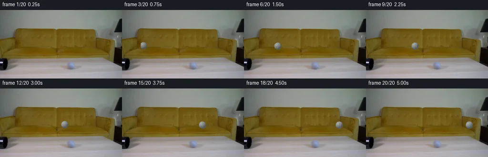
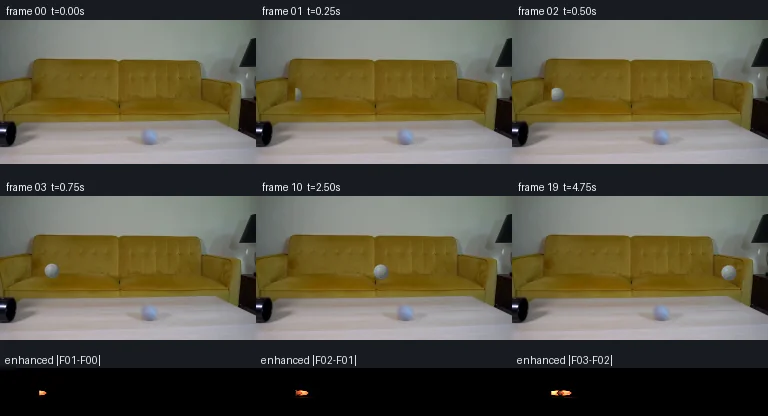

V0 · 初版即最终版
![]()
Observable Generation Trace
把最终像素视频、Harness 冻结的每轮候选、真实工具事件和 Agent 自述放在同一页。可观测证据与模型自述分开标记，避免把“模型说它检查过”误当成真实工具调用。
![首帧]()
Static locked-off single-shot with fixed frame throughout filmed with constant framerate in real-time. The scene shows a realistic scientific demonstration. The scene only contains the described setup and actions. A light wood coffee table in the foreground with a black pipe on the left end of the table. The grey tennis ball rolls out of the pipe over the entire table towards the right.
首帧显示在左侧播放器初始画面。Track 权限、隔离和 tensor 一致性来自 run manifest，而不是 METHOD.md。
上方并排显示初版和最终版，默认同步播放；下方每个版本可独立播放，也可勾选加入同步播放。仅检查图更新的连续重复快照已合并，回退旧视频仍保留为一次修订。
Observable events
来源：events.jsonl + run manifest
此 Track 禁止读取输出图片。逐轮预览由外部 Harness 自动冻结，只用于事后审计，生成 Agent 当时看不到这些页面。
Frozen candidates
每张图来自该 round 的真实 00 / 01 / 05 / 10 / 19 帧

pixels e49cfea283a4e811 · code 8ef1a7f1f1565379
--- previous/generate.py
+++ current/generate.py
@@ -0,0 +1,252 @@
+#!/usr/bin/env python3
+"""Generate the PixelWorld-Text continuation using only local RGB operations."""
+
+from pathlib import Path
+import hashlib
+import importlib.util
+
+import numpy as np
+from PIL import Image, ImageDraw, ImageFont
+
+
+ROOT = Path(__file__).resolve().parent
+W, H, N = 256, 144, 20
+SS = 4
+
+
+def load_artifact_io():
+ spec = importlib.util.spec_from_file_location("artifact_io", ROOT / "artifact_io.py")
+ module = importlib.util.module_from_spec(spec)
+ assert spec.loader is not None
+ spec.loader.exec_module(module)
+ return module
+
+
+def ease_positions():
+ """Hand-tuned observed screen positions with a gentle frictional slowdown."""
+ return np.array(
+ [0.0, 39.0, 45.0, 52.0, 61.0, 71.0, 81.0, 92.0, 103.0, 114.0,
+ 125.0, 136.0, 147.0, 158.0, 169.0, 180.0, 190.0, 200.0, 209.0, 217.0],
+ dtype=np.float32,
+ )
+
+
+def downsample_rgba(layer):
+ """Premultiplied-alpha-safe supersample reduction."""
+ arr = np.asarray(layer, dtype=np.float32) / 255.0
+ a = arr[..., 3:4]
+ premul = arr[..., :3] * a
+ pre_img = Image.fromarray(np.uint8(np.clip(premul * 255.0 + 0.5, 0, 255)), "RGB")
+ a_img = Image.fromarray(np.uint8(np.clip(a[..., 0] * 255.0 + 0.5, 0, 255)), "L")
+ size = (layer.width // SS, layer.height // SS)
+ pre = np.asarray(pre_img.resize(size, Image.Resampling.LANCZOS), dtype=np.float32) / 255.0
+ alpha = np.asarray(a_img.resize(size, Image.Resampling.LANCZOS), dtype=np.float32) / 255.0
+ rgb = np.zeros_like(pre)
+ nz = alpha > 1e-4
+ rgb[nz] = pre[nz] / alpha[nz, None]
+ out = np.dstack((np.clip(rgb, 0, 1), alpha))
+ return np.uint8(np.clip(out * 255.0 + 0.5, 0, 255))
+
+
+def composite_rgba(dst, rgba, x0, y0):
+ """Alpha composite an RGBA tile without touching pixels outside its alpha."""
+ h, w = rgba.shape[:2]
+ x1, y1 = min(W, x0 + w), min(H, y0 + h)
+ sx0, sy0 = max(0, -x0), max(0, -y0)
+ x0c, y0c = max(0, x0), max(0, y0)
+ if x1 <= x0c or y1 <= y0c:
+ return
+ src = rgba[sy0:sy0 + y1 - y0c, sx0:sx0 + x1 - x0c].astype(np.float32)
+ alpha = src[..., 3:4] / 255.0
+ region = dst[y0c:y1, x0c:x1].astype(np.float32)
+ dst[y0c:y1, x0c:x1] = np.uint8(np.clip(src[..., :3] * alpha + region * (1.0 - alpha) + 0.5, 0, 255))
+
+
+def render_shadow(radius, speed, visible, seed_phase):
+ """A soft, warm-neutral contact shadow below the sphere."""
+ tw, th = 30, 16
+ yy, xx = np.mgrid[0:th * SS, 0:tw * SS].astype(np.float32)
+ cx = tw * SS * 0.5 + min(1.4, speed * 0.07) * SS
+ cy = 5.7 * SS
+ rx = (radius * (1.15 + min(speed, 11.0) * 0.012)) * SS
+ ry = 2.15 * SS
+ q = ((xx - cx) / rx) ** 2 + ((yy - cy) / ry) ** 2
+ # Small dense contact core plus a broad, faint penumbra.
+ alpha = 50.0 * np.exp(-2.0 * q) + 19.0 * np.exp(-0.70 * q)
+ alpha *= visible
+ # Break perfect CG smoothness with a tiny deterministic modulation.
+ alpha *= 0.985 + 0.015 * np.sin(xx * 0.31 + yy * 0.23 + seed_phase)
+ out = np.zeros((th * SS, tw * SS, 4), dtype=np.uint8)
+ out[..., :3] = np.array([49, 43, 31], dtype=np.uint8)
+ out[..., 3] = np.uint8(np.clip(alpha, 0, 76))
+ return downsample_rgba(Image.fromarray(out, "RGBA"))
+
+
+def render_ball(radius, theta, visible, clip_left=None):
+ """Render an analytically lit, fuzzy gray tennis ball and rotating seams."""
+ tw = th = 24
… diff truncated; 165 more lines …pixels e49cfea283a4e811 · code 768d9dad343e3021
--- previous/generate.py
+++ current/generate.py
@@ -190,10 +190,6 @@
y0 = 352
for j, (a, b) in enumerate([(0, 1), (1, 2), (2, 3)]):
diff = np.abs(frames[b].astype(np.int16) - frames[a].astype(np.int16)).max(2)
- view = np.zeros((48, 256, 3), dtype=np.uint8)
- view[..., 0] = np.clip(diff * 5, 0, 255)
- view[..., 1] = np.clip(diff * 2, 0, 255)
- view[..., 2] = np.clip(diff, 0, 255)
# Collapse the full-height diff into 48 rows by nearest scaling for diagnostic visibility.
di = Image.fromarray(np.dstack((np.clip(diff * 5, 0, 255), np.clip(diff * 2, 0, 255), diff)).astype(np.uint8))
di = di.resize((256, 48), Image.Resampling.NEAREST)pixels e49cfea283a4e811 · code ac2ae3faf35c563e
--- previous/generate.py
+++ current/generate.py
@@ -36,8 +36,8 @@
arr = np.asarray(layer, dtype=np.float32) / 255.0
a = arr[..., 3:4]
premul = arr[..., :3] * a
- pre_img = Image.fromarray(np.uint8(np.clip(premul * 255.0 + 0.5, 0, 255)), "RGB")
- a_img = Image.fromarray(np.uint8(np.clip(a[..., 0] * 255.0 + 0.5, 0, 255)), "L")
+ pre_img = Image.fromarray(np.uint8(np.clip(premul * 255.0 + 0.5, 0, 255)))
+ a_img = Image.fromarray(np.uint8(np.clip(a[..., 0] * 255.0 + 0.5, 0, 255)))
size = (layer.width // SS, layer.height // SS)
pre = np.asarray(pre_img.resize(size, Image.Resampling.LANCZOS), dtype=np.float32) / 255.0
alpha = np.asarray(a_img.resize(size, Image.Resampling.LANCZOS), dtype=np.float32) / 255.0
@@ -79,7 +79,7 @@
out = np.zeros((th * SS, tw * SS, 4), dtype=np.uint8)
out[..., :3] = np.array([49, 43, 31], dtype=np.uint8)
out[..., 3] = np.uint8(np.clip(alpha, 0, 76))
- return downsample_rgba(Image.fromarray(out, "RGBA"))
+ return downsample_rgba(Image.fromarray(out))
def render_ball(radius, theta, visible, clip_left=None):
@@ -132,7 +132,7 @@
alpha *= clip
rgba = np.dstack((np.clip(rgb, 0, 255), np.clip(alpha * 255.0, 0, 255))).astype(np.uint8)
- return downsample_rgba(Image.fromarray(rgba, "RGBA"))
+ return downsample_rgba(Image.fromarray(rgba))
def make_frames(base):Final visual checks
Harness 保存的最终产物


Agent claims
以下文字由生成 Agent 撰写，不等同于工具证据
first_frame.png is RGB, 256 x 144, with 13,524 distinct RGB triples.The background is copied from frame 00 without any camera motion. Positions below are screen-space ball centers; the slight scale increase and one-pixel vertical drift reflect the tabletop perspective. Rotation is tied to distance traveled (angle = distance / radius) so the seam visibly rolls rather than slides.
| Frame | Time | Planned event |
|---|---|---|
| 00 | 0.00 s | Exact source image; ball still hidden inside pipe. |
| 01 | 0.25 s | First partial gray arc appears at mouth near x=39. |
| 02 | 0.50 s | Ball center near x=45; more than half emerged. |
| 03 | 0.75 s | Ball clears lip near x=52; first full contact shadow. |
| 04 | 1.00 s | Rolling right near x=61. |
| 05 | 1.25 s | Rolling right near x=71; seam rotated with translation. |
| 06 | 1.50 s | Rolling right near x=81. |
| 07 | 1.75 s | Rolling right near x=92. |
| 08 | 2.00 s | Rolling right near x=103. |
| 09 | 2.25 s | Rolling right near x=114. |
| 10 | 2.50 s | Passes table center near x=125. |
| 11 | 2.75 s | Rolling right near x=136. |
| 12 | 3.00 s | Rolling right near x=147. |
| 13 | 3.25 s | Rolling right near x=158. |
| 14 | 3.50 s | Rolling right near x=169. |
| 15 | 3.75 s | Mild frictional slowing becomes visible near x=180. |
| 16 | 4.00 s | Rolling right near x=190. |
| 17 | 4.25 s | Rolling right near x=200. |
| 18 | 4.50 s | Near right side of usable tabletop at x=209. |
| 19 | 4.75 s | Reaches x=217, still on the table and still rolling slowly right. |
Rendering will use supersampled procedural layers composited only where the ball and its contact shadow exist: a soft elliptical shadow, analytically shaded neutral-gray sphere, fine deterministic fuzz/noise, two curved pale tennis seams, a small cool highlight, and subtle speed-dependent horizontal softness. No unrelated scene pixels will change.
I used only local Python numeric RGB operations with NumPy and Pillow. I did not use image viewing, external models, external engines, masks, references, network access, or subagents.
first_frame.png was measured numerically using RGB statistics, luminance/chroma thresholds, edge scans, connected components, and coordinate samples. Those measurements established the tabletop, pipe-exit region, scale, and safe ball path described in OBSERVATION.md.
Generation keeps the source RGB array as a locked background. Frame 00 is a direct array copy of the source and is also verified byte-for-byte after PNG saving. For frames 01-19, the generator composites only two procedural supersampled layers:
The seam/fuzz coordinates rotate by accumulated travel divided by radius, so visible rotation matches rolling distance. Position advances across the full usable table with mild late deceleration. Radius grows from 7.35 to 7.80 pixels and center y drifts by 1.8 pixels to reflect tabletop perspective. The first two continuation frames progressively reveal the ball at the measured pipe mouth. Supersampled layers are downsampled in premultiplied-alpha form to avoid dark halos, then composited without altering unrelated pixels.
artifact_io.py saves the required uint32 0xRRGGBB tensor, all 20 PNGs, inspection sheet, and standalone player. The generator then reloads every PNG, repacks it to uint32, and checks exact equality against pixels.npz. It also checks dimensions/dtype, local changed-pixel bounds, non-empty frame-to-frame motion, exact frame-00 RGB equality, and byte-identical frame-00 PNG equality.
transition_check.png is a diagnostic contact sheet containing the source/emergence frames, midpoint/final frames, and enhanced early-transition difference maps. It was generated programmatically; no claim of visual review is made.